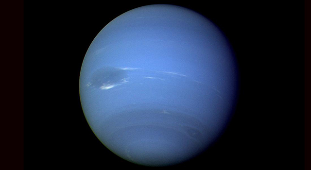
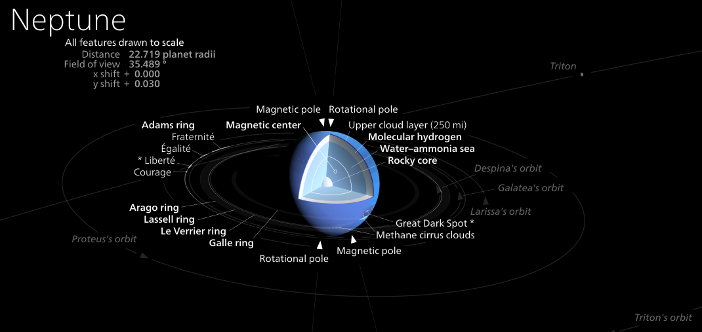

Neptune

The 8th and furthest planet is Neptune. It is over 4.5 billion km away from the sun, 30 times the distance to Earth (AU), and takes 165 years to complete 1 orbit. Unlike the other planets, Neptune was discovered using math. By looking at how the orbit of Uranus was affected, mathematician Joseph Le Verrier realized it must have been caused by another planet’s gravity and calculated the location of Neptune in 1846. Later, when telescopes were pointed in that area, the planet’s existence was confirmed and named after the Roman god of the sea.
Neptune is the smallest outer planet, with a 24700-kilometer radius, and 17 times the mass of Earth. In the center is a rocky core with about the same mass as Earth, and surrounding that is a mantle made of a mix of water, ammonia, and methane under very high pressure. The surface layer consists of mostly hydrogen and helium, with more and more methane as you get lower down. It contains many clouds ammonia and winds that blow as fast as 2200 km/h, the fastest on any planet. Taking up almost as much area as Earth is the great dark spot, a huge storm similar to Jupiter’s great red spot, although not as big and only lasting for a few years.
Like Uranus, the methane in Neptune’s surface layer makes it blue-green. However, there is another unknown chemical that gives it a deeper and more vivid color.
Like the rest of the gas giants, Neptune has rings, although they are very faint and hard to see. Neptune has 14 moons. Triton, the largest of them, has a radius of about 1400 km and is bigger than Pluto.
Neptune has a magnetic field caused by the electrically-conducting liquid in the mantle. Like Uranus, the magnetic poles are far away from the planet’s rotational axis.